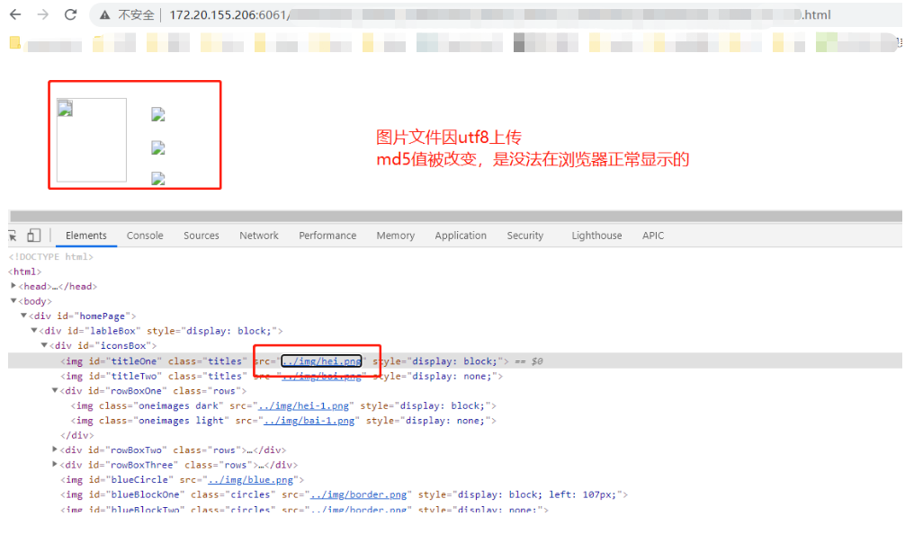
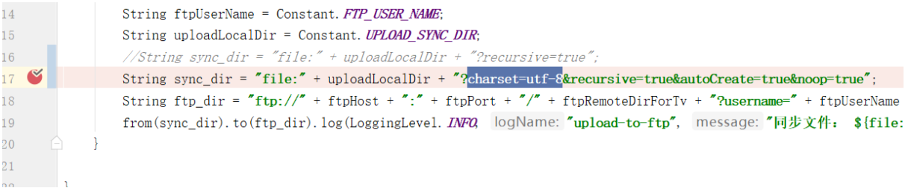

A Bug That Displays Abnormally After Uploading an Image
记一次解决图片上传后在浏览器不能正常显示的问题⌗
原来这个项目是比较老，采用的是spirng mvc +ftp 技术搭建的上传功能，通过把一个静态资源h5页，打包成一个zip上传到后台
后台再对其zip包进行解压上传到cdn服务器，以域名访问该静态资源页面，其静态资源包含html,js, jpg。 然后设计师大部分以图片形式排版，组成的html5 幻灯显示页面，难后在上传过程有偶发性的遇到图片打不开，显示不正常等问题，bug是随机复现。于是找了很久才找到这个问题根源，下面对其记录一下
问题主要原因：从本地上传到ftp服务器传输读写编码不一至导致的，对于二进制图片，应采用二进制上传，开启ftp被动模式,编码为ASCII，
对于文本文件如css,txt,js文件应采用utf8或者ascii都可以，关键是在文件读写时需要保持编码前后一致即可
意思就是在本地解压zip后，需要把zip包静态资源按照 目录格式同步 ftp 服务器当中，关键是文件在上传前后读写需要保持编码一至就不会出现这个问题
下面开始详细分析调式
当设置uft8编码上传图片文件后，每个文件上传后会少很多的字节内容
该图片文件默认在上传前编码格式为 ANSI

然后从同步到ftp 服务器后，下载到本地打开发现，编码变成了GB2312 格式的
当然变成GB2312编码上传后的图片文件，文件md5值是一样的，浏览器不能正常显示图片文件，因为图片文件被编码破坏了

原老项目采用apache commons net 包下的ftp client，不知道为什么设置了编码也没有解决问题，说是同步到ftp工具用apache camel 组件代替 apache commons net 的ftp client, 替换之前尝试把编码设置成uft-8,果然很容易复现问题

最终用apache camel 代替了 ftpclient 解决ftp 同步图片后偶发性打不开的问题